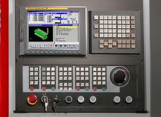

Why do we use cnc programming cycles or cnc canned cycles in cnc programming, the following are pros and cons of the cnc canned cycles.

CNC Programming Cycles or CNC Canned Cycles Pros and Cons
I love the use of cnc program cycle. And I am the big fan of cnc canned cycles. I am the guy who will say that try to use cnc program cycles in your programs and soon you will see how cnc programming cycles adds another dimension in you cnc programming life style.
CNC Programming Cycles or CNC Canned Cycles Benefits
CNC programming cycles or cnc canned cycles makes cnc programmer life easy here is how.
- cnc programming cycles make our life easy
- cnc programming cycles make program management easy
- repetitive cnc program block are summed up in just one or two cnc programming block
- Increase productivity
- Shortens component machining time
- Makes our cnc programs clutter free (without cnc canned cycle our program will be much longer)
- cnc programming cycles give better control over tool feed and depth of cut (you can vary depth of cut by just changing one parameter)
- Less memory usage ( cnc programming cycles shortens cnc program length )
- Better component Finish and Increase in Tool Insert life ( threading cycles on most cnc controls uses a technique in which cnc controls gradually decreases the depth of cut when they are near the required dimension)
- Makes cnc program debugging easy ( short programs are easier to debug)
Although cnc canned cycles makes cnc programmer life lot easier but here are some of the cons of the cnc programming cycles.
CNC Programming Cycles or CNC Canned Cycles Cons
- Cnc programming cycle are cnc machine control dependent
- Even cnc programming cycle are not same on the same cnc control with different version numbers.
- Not every programmer can understand cnc programming cycle
- Makes cnc program alteration difficult (You need a cnc programmer which understands a cycle.)
- CAD/CAM problems.
- Cycle behaviors are cnc control specific ( on Fanuc if you are using G71 or G72 and cutting a longer contour and at the contour end you don’t take the tool back to a safe point it might collide with component during last run )
- Sometimes the management guys understand the use of cnc cycle parameters and might ask to increase the depth of cut to decrease the overall time cycle for the component.